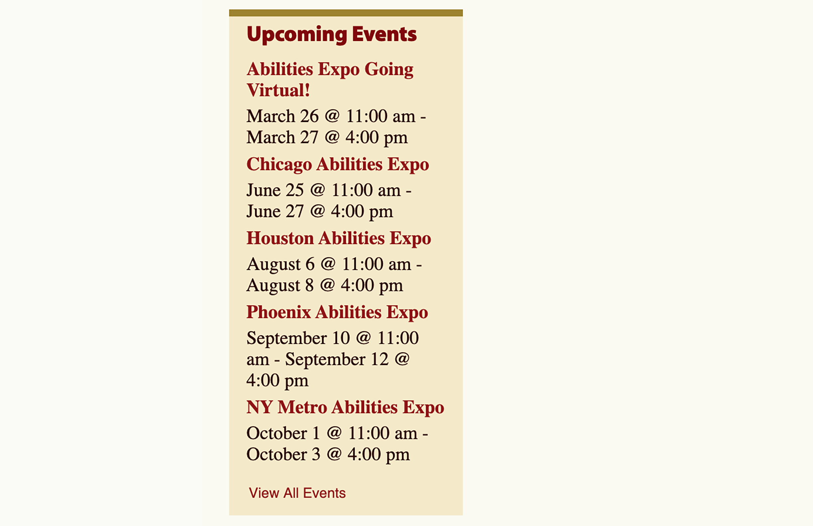

Research


One thing I noticed is that when you scroll on the homepage there is a odd space between the nav and the info that makes it really har to read. There is a lot of muted brown and burgandy throughout the website which is not very inviting. Since this is an organiztion for kids it might help to add more vibrant colors.
Canines for Kids offers their services in 12 states but, show this with a boring, small list. I think creating an interactive map or section devoted to the different locations they work at.

The very long list that is used as a nav bar (on all the pages except the home page) is not very effective. I found it hard to navigate because of the small text and the odd hierarchy.